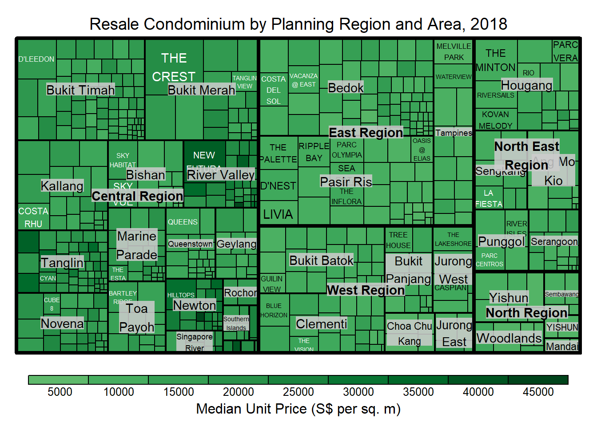
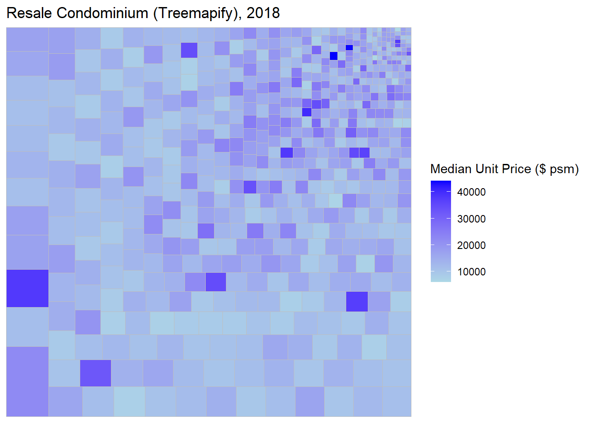
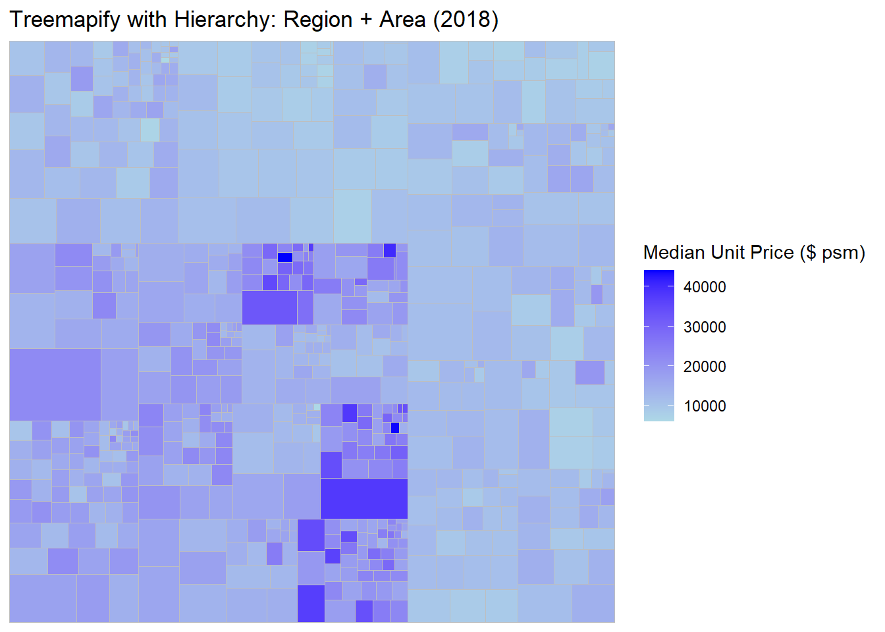
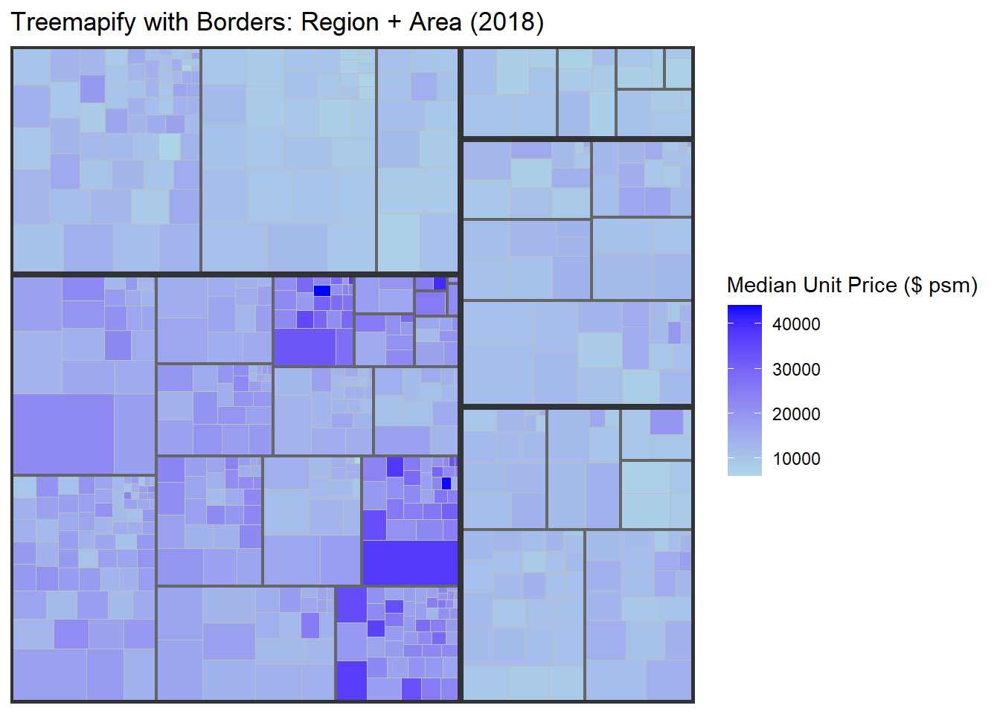

# Required packages for this exercise
required_pkgs <- c("tidyverse", "janitor", "treemap", "treemapify")
missing_pkgs <- required_pkgs[!vapply(required_pkgs, requireNamespace, logical(1), quietly = TRUE)]
if (length(missing_pkgs) > 0) {
stop(
"Missing packages: ", paste(missing_pkgs, collapse = ", "),
"
Install them in Console, e.g.
",
"install.packages(c(", paste(sprintf('"%s"', missing_pkgs), collapse = ", "), "), type=\"binary\")"
)
}
library(tidyverse)
library(janitor)
library(treemap)
library(treemapify)Hands-on Exercise 05e: Treemap Visualisation with R
1 16.1 Overview
In this hands-on exercise, I replicate the workflow demonstrated in the lecture notes (Chap 16) to design treemaps using:
- treemap (static treemaps)
- treemapify (ggplot2-style treemaps)
- d3treeR (interactive treemap, optional)
Note (dataset year): The lecture screenshots use a 2017 example, but the provided realis2018.csv contains 2018 transactions. I keep the same design steps and update titles to 2018 so that the plots match the data. fileciteturn1file0
2 16.2 Installing and launching packages
Important: To avoid long renders and Windows compilation issues, do not install packages during render.
Install once in the Console if needed:
install.packages(c("tidyverse","janitor","treemap","treemapify"), type="binary")
3 16.3 Data Wrangling
3.1 16.3.1 Importing the dataset
realis2018 <- readr::read_csv("../data/realis2018.csv", show_col_types = FALSE)
realis2018 <- realis2018 %>% janitor::clean_names()
glimpse(realis2018)Rows: 23,205
Columns: 20
$ project_name <chr> "ADANA @ THOMSON", "ALANA", "ALANA", "ALAN…
$ address <chr> "8 Old Upper Thomson Road #05-03", "156 S…
$ no_of_units <dbl> 1, 1, 1, 1, 1, 1, 1, 1, 1, 1, 1, 1, 1, 1, …
$ area_sqm <dbl> 52, 284, 256, 256, 277, 285, 234, 155, 115…
$ type_of_area <chr> "Strata", "Strata", "Strata", "Strata", "S…
$ transacted_price <dbl> 888888, 2530000, 2390863, 2450000, 1980000…
$ nett_price <chr> "-", "-", "2382517", "2441654", "-", "-", …
$ unit_price_psm <dbl> 17094, 8908, 9307, 9538, 7148, 6947, 14763…
$ unit_price_psf <dbl> 1588, 828, 865, 886, 664, 645, 1371, 1499,…
$ sale_date <chr> "4-Jul-18", "5-Oct-18", "9-Jun-18", "14-Ma…
$ property_type <chr> "Apartment", "Terrace House", "Terrace Hou…
$ tenure <chr> "Freehold", "103 Yrs From 12/08/2013", "10…
$ completion_date <chr> "2018", "2018", "2018", "2018", "2008", "2…
$ type_of_sale <chr> "New Sale", "Sub Sale", "New Sale", "New S…
$ purchaser_address_indicator <chr> "Private", "Private", "HDB", "N.A", "Priva…
$ postal_district <dbl> 20, 28, 28, 28, 26, 26, 26, 26, 26, 26, 26…
$ postal_sector <dbl> 57, 80, 80, 80, 78, 78, 78, 78, 78, 78, 78…
$ postal_code <dbl> 573868, 804555, 804529, 804540, 786300, 78…
$ planning_region <chr> "North East Region", "North East Region", …
$ planning_area <chr> "Ang Mo Kio", "Ang Mo Kio", "Ang Mo Kio", …3.2 16.3.2 Data wrangling and manipulation
The raw records are at transaction level (very granular). For treemaps, we summarise by a small set of geographic and property descriptors.
Goal: compute
- Total units sold
- Total area
- Median unit price (psm)
- Median transacted price
grouped by:
- project_name
- planning_region
- planning_area
- property_type
- type_of_sale
3.3 16.3.3 Grouped summaries (without the pipe)
realis2018_grouped <- dplyr::group_by(
realis2018,
project_name, planning_region, planning_area, property_type, type_of_sale
)
realis2018_summarised <- dplyr::summarise(
realis2018_grouped,
total_units_sold = sum(no_of_units, na.rm = TRUE),
total_area = sum(area_sqm, na.rm = TRUE),
median_unit_price_psm = median(unit_price_psm, na.rm = TRUE),
median_transacted_price = median(transacted_price, na.rm = TRUE),
.groups = "drop"
)
realis2018_summarised %>% slice_head(n = 10)# A tibble: 10 × 9
project_name planning_region planning_area property_type type_of_sale
<chr> <chr> <chr> <chr> <chr>
1 # 1 LOFT Central Region Geylang Apartment Resale
2 # 1 SUITES Central Region Geylang Apartment Resale
3 1 CANBERRA North Region Yishun Executive Cond… Resale
4 1 KING ALBERT PARK Central Region Bukit Timah Condominium Resale
5 10 EVELYN Central Region Novena Apartment New Sale
6 10 SHELFORD Central Region Bukit Timah Apartment Resale
7 11 AMBER ROAD Central Region Marine Parade Apartment Resale
8 111 EMERALD HILL Central Region Newton Apartment Resale
9 120 GRANGE Central Region River Valley Apartment New Sale
10 16 @ AMBER Central Region Marine Parade Apartment Resale
# ℹ 4 more variables: total_units_sold <dbl>, total_area <dbl>,
# median_unit_price_psm <dbl>, median_transacted_price <dbl>3.4 16.3.4 Grouped summaries (with the pipe)
Personally I find the pipe version easier to read because the steps flow top-to-bottom and I do not need to create intermediate objects unless I want to inspect them.
realis2018_summarised2 <- realis2018 %>%
group_by(project_name, planning_region, planning_area, property_type, type_of_sale) %>%
summarise(
total_units_sold = sum(no_of_units, na.rm = TRUE),
total_area = sum(area_sqm, na.rm = TRUE),
median_unit_price_psm = median(unit_price_psm, na.rm = TRUE),
median_transacted_price = median(transacted_price, na.rm = TRUE),
.groups = "drop"
)
identical(realis2018_summarised, realis2018_summarised2)[1] TRUE4 16.4 Designing Treemap with treemap package
In this section, I follow the lecture sequence to explore how index, vSize, vColor, type, palettes and layout parameters affect the treemap.
4.1 16.4.1 Selecting records for treemap design
To stay consistent with the lecture example, I focus on Condominium and Resale records. (This also reduces clutter so the main patterns are easier to see.)
realis2018_selected <- realis2018_summarised %>%
filter(property_type == "Condominium", type_of_sale == "Resale") %>%
filter(total_units_sold > 0)
realis2018_selected %>% slice_head(n = 10)# A tibble: 10 × 9
project_name planning_region planning_area property_type type_of_sale
<chr> <chr> <chr> <chr> <chr>
1 1 KING ALBERT PARK Central Region Bukit Timah Condominium Resale
2 3 ORCHARD BY-THE-PA… Central Region Orchard Condominium Resale
3 368 THOMSON Central Region Novena Condominium Resale
4 6 DERBYSHIRE Central Region Novena Condominium Resale
5 8 @ MOUNT SOPHIA Central Region Rochor Condominium Resale
6 8 NAPIER Central Region Tanglin Condominium Resale
7 8 SAINT THOMAS Central Region River Valley Condominium Resale
8 8@WOODLEIGH Central Region Toa Payoh Condominium Resale
9 A TREASURE TROVE North East Reg… Punggol Condominium Resale
10 AALTO Central Region Marine Parade Condominium Resale
# ℹ 4 more variables: total_units_sold <dbl>, total_area <dbl>,
# median_unit_price_psm <dbl>, median_transacted_price <dbl>4.2 16.4.2 Using the basic arguments
This is the “starter” treemap: hierarchy = region → area → project; rectangle size = units sold; colour = median unit price.
treemap(
realis2018_selected,
index = c("planning_region", "planning_area", "project_name"),
vSize = "total_units_sold",
vColor = "median_unit_price_psm",
title = "Resale Condominium by Planning Region and Area, 2018",
title.legend = "Median Unit Price (S$ per sq. m)"
)
4.3 16.4.3 Working with vColor and type
In the lecture, the warning is that if we do not specify type, the default may treat the colour mapping differently. Setting type = "value" makes the legend behave more intuitively for numeric colour values.
treemap(
realis2018_selected,
index = c("planning_region", "planning_area", "project_name"),
vSize = "total_units_sold",
vColor = "median_unit_price_psm",
type = "value",
title = "Resale Condominium by Planning Region and Area, 2018",
palette = "Greens",
title.legend = "Median Unit Price (S$ per sq. m)"
)
4.4 16.4.4 Colours in treemap package
4.4.1 Diverging palette (may look confusing when all values are positive)
treemap(
realis2018_selected,
index = c("planning_region", "planning_area", "project_name"),
vSize = "total_units_sold",
vColor = "median_unit_price_psm",
type = "value",
palette = "RdYlBu",
title = "Resale Condominium by Planning Region and Area, 2018",
title.legend = "Median Unit Price (S$ per sq. m)"
)
4.4.2 Manual type
Manual type maps the value range linearly without binning. I use it to compare how the legend and colour spread differ.
treemap(
realis2018_selected,
index = c("planning_region", "planning_area", "project_name"),
vSize = "total_units_sold",
vColor = "median_unit_price_psm",
type = "manual",
palette = "Blues",
title = "Resale Condominium by Planning Region and Area, 2018",
title.legend = "Median Unit Price (S$ per sq. m)"
)
4.5 16.4.7 Treemap layout (algorithm)
The lecture compares squarified and pivotSize. Here I explicitly set algorithm = "squarified".
treemap(
realis2018_selected,
index = c("planning_region", "planning_area", "project_name"),
vSize = "total_units_sold",
vColor = "median_unit_price_psm",
type = "manual",
palette = "Blues",
algorithm = "squarified",
title = "Resale Condominium by Planning Region and Area, 2018",
title.legend = "Median Unit Price (S$ per sq. m)"
)
4.6 16.4.9 Using sortID (with pivotSize)
With pivotSize, sortID controls the order of rectangle placement. Following the lecture, I sort by median_transacted_price.
treemap(
realis2018_selected,
index = c("planning_region", "planning_area", "project_name"),
vSize = "total_units_sold",
vColor = "median_unit_price_psm",
type = "manual",
palette = "Blues",
algorithm = "pivotSize",
sortID = "median_transacted_price",
title = "Resale Condominium by Planning Region and Area, 2018",
title.legend = "Median Unit Price (S$ per sq. m)"
)
5 16.5 Designing Treemap using treemapify package
treemapify is convenient when I want treemaps that behave like normal ggplot layers, so I can style them using themes and scales.
5.1 16.5.1 Designing a basic treemap
ggplot(data = realis2018_selected,
aes(area = total_units_sold,
fill = median_unit_price_psm)) +
geom_treemap() +
scale_fill_gradient(low = "light blue", high = "blue") +
labs(
title = "Resale Condominium (Treemapify), 2018",
fill = "Median Unit Price ($ psm)"
) +
theme_minimal()
5.2 16.5.2 Defining hierarchy
5.2.1 Group by Planning Region
ggplot(data = realis2018_selected,
aes(area = total_units_sold,
fill = median_unit_price_psm,
subgroup = planning_region)) +
geom_treemap() +
scale_fill_gradient(low = "light blue", high = "blue") +
labs(
title = "Treemapify with Hierarchy: Planning Region (2018)",
fill = "Median Unit Price ($ psm)"
) +
theme_minimal()
5.2.2 Group by Planning Region + Planning Area
ggplot(data = realis2018_selected,
aes(area = total_units_sold,
fill = median_unit_price_psm,
subgroup = planning_region,
subgroup2 = planning_area)) +
geom_treemap() +
scale_fill_gradient(low = "light blue", high = "blue") +
labs(
title = "Treemapify with Hierarchy: Region + Area (2018)",
fill = "Median Unit Price ($ psm)"
) +
theme_minimal()
5.2.3 Adding boundary lines
This step makes the hierarchical blocks easier to read (especially when there are many small projects).
ggplot(data = realis2018_selected,
aes(area = total_units_sold,
fill = median_unit_price_psm,
subgroup = planning_region,
subgroup2 = planning_area)) +
geom_treemap() +
geom_treemap_subgroup2_border(colour = "gray40", size = 2) +
geom_treemap_subgroup_border(colour = "gray20") +
scale_fill_gradient(low = "light blue", high = "blue") +
labs(
title = "Treemapify with Borders: Region + Area (2018)",
fill = "Median Unit Price ($ psm)"
) +
theme_minimal()
6 16.6 Designing Interactive Treemap using d3treeR
6.1 16.6.1 Installing d3treeR (optional)
The lecture installs d3treeR from GitHub. On Windows, this can be slow if it triggers compilation.
If you want the interactive plot, install once in Console:
install.packages("remotes", type="binary")remotes::install_github("timelyportfolio/d3treeR")
6.2 16.6.2 Designing an interactive treemap
This chunk will render the interactive treemap only if d3treeR is installed. Otherwise it will show a short message (and the document will still render).
if (requireNamespace("d3treeR", quietly = TRUE)) {
library(d3treeR)
tm <- treemap(
realis2018_selected,
index = c("planning_region", "planning_area"),
vSize = "total_units_sold",
vColor = "median_unit_price_psm",
type = "value",
title = "Private Residential Property Sold, 2018",
title.legend = "Median Unit Price (S$ per sq. m)"
)
d3treeR::d3tree(tm, rootname = "Singapore")
} else {
cat("d3treeR is not installed. Install it in Console to view the interactive treemap.")
}d3treeR is not installed. Install it in Console to view the interactive treemap.